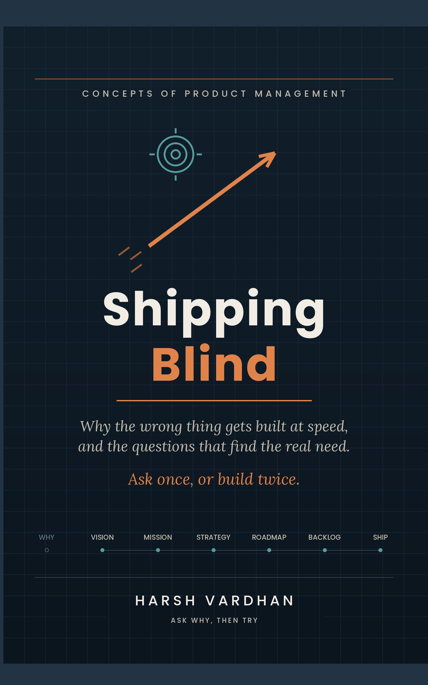

Most product failures don't come from bad execution — they come from starting at the wrong end of the chain, before anyone stopped to ask why. Shipping Blind walks through the questions teams skip on the way to shipping fast, and what it costs when they do: 28 chapters across 8 parts, from first idea to organizational maturity, each built around a real question and a worked scenario.
Get it on Kindle →